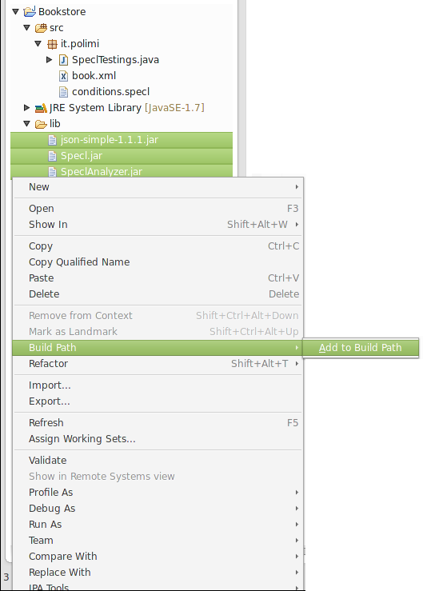

Didactic Example
Specl is a very flexible language and for this reason it could be used in various contexts.
In the following sections you’ll find out some nice application.
Table of Content
Setup
In the next few lines we describe how to includes the proper libraries into a generic Java project for exploits the characteristics of Specl.
Download
Start from getting the jar libraries from this link.
The required libraries are:
- SpeclAnalyzer.jar
- Specl.jar
- json-simple-1.1.1.jar
Install
Create a lib folder into your project's main folder, add the download libraries and add them to the Build Path of the project.
Project's Structure
The structure of our project is the following:
.
|-- lib
| |-- json-simple-1.1.1.jar
| |-- SpeclAnalyzer.jar
| `-- Specl.jar
`-- src
`-- it
`-- polimi
|-- book.xml
|-- conditions.specl
`-- SpeclTestings.java
Viewed from Eclipse IDE:

Main Java Class
We generate and use the test a simple Java class: it simply parse book.xml and passes it to the analyzer (analyzer.setXMLInput(book.xml)), then passes the conditions.specl file, containing the assertions, to the analyzer that checks it and produces some result (analyzer.evaluate(conditions)).
The test class SpeclTestings.java:
package it.polimi;
import java.io.File;
import java.io.IOException;
import javax.xml.parsers.DocumentBuilder;
import javax.xml.parsers.DocumentBuilderFactory;
import javax.xml.parsers.ParserConfigurationException;
import org.w3c.dom.Document;
import org.xml.sax.SAXException;
import it.polimi.specl.SpeclAnalyzer;
import it.polimi.specl.helpers.SpeclException;
public class SpeclTestings {
static SpeclAnalyzer analyzer = new SpeclAnalyzer();
// the path of the input file
static String inputPath = "src/it/polimi/book.xml";
// the path of the file with Specl's assertions
static String conditions = "src/it/polimi/conditions.specl";
public static void main(String[] args) {
// we obtain a document from the XML file and pass it as input to the analyzer
DocumentBuilderFactory factory = DocumentBuilderFactory.newInstance();
DocumentBuilder builder;
try {
builder = factory.newDocumentBuilder();
Document doc = builder.parse(new File(inputPath));
doc.getDocumentElement().normalize();
analyzer.setXMLInput(doc);
} catch (ParserConfigurationException e2) {
e2.printStackTrace();
} catch (SAXException | IOException e1) {
e1.printStackTrace();
}
// set the assertions file
analyzer.setSpeclFilePath(conditions);
// evaluate the assertions, if runtime errors are thrown they'll be catched and printed
try {
analyzer.evaluate();
} catch (SpeclException e) {
System.err.println(e.getMessage());
}
}
}
Didactic example: Bookstore
Just a little case to understand better about what we’re talking about. Starting from the presentation of the input file we are going to use, we pass then through a step-by-step exemplification of the language features and we will cover almost the whole set of its capabilitites.
The input file is the succeeding xml file, book.xml:
<inventory>
<name>InventoryABCD</name>
<book>
<year>2000</year>
<title>Snow Crash</title>
<authors>
<author>Neal Stephenson</author>
</authors>
<publisher>Spectra</publisher>
<isbn>0553380958</isbn>
<price>15</price>
</book>
<book>
<year>2005</year>
<title>Burning Tower</title>
<authors>
<author>Larry Niven</author>
<author>Jerry Pournelle</author>
</authors>
<publisher>Pocket</publisher>
<isbn>0743416910</isbn>
<price>6</price>
</book>
<book>
<year>1995</year>
<title>Zodiac</title>
<authors>
<author>Neal Stephenson</author>
</authors>
<publisher>Spectra</publisher>
<isbn>0871131811</isbn>
<price>7.50</price>
</book>
</inventory>
The corresponding SDO representation is:
{
Inventory =
{
name = InventoryABCD,
book=
[
{
year = 2000.0,
title = Snow Crash,
authors =
{
author = Neal Stephenson
}
publisher = Spectra,
isbn = 0553380958,
price = 15.0
},
{
year = 2005.0,
title = Burning Tower,
authors =
{
author =
[
Larry Niven,
Jerry Pournelle
]
},
publisher = Pocket,
isbn = 0743416910,
price = 6.0
},
{
year = 1995.0,
title = Zodiac,
authors =
{
author = Neal Stephenson
},
publisher = Spectra,
isbn = 0871131811,
price = 7.5
}
]
}
}
The following assertions are based on this file.
First Assertion
Now we have to generate a specl file with the assertions to verify.
For convenience just save conditions.specl in the same folder as the xml file and the application jar, then copy-and-paste the next assertion:
/inventory/book[1]/title == "Snow Crash";
Launch the application!
The results that appears on the console are
INFO - ***** Specl Analyser *****
INFO - 0 declarations found
INFO - 2 assertions found
INFO - DECLARATION EVALUATION
INFO - ASSERTION EVALUATION
INFO - Assertion '/inventory/book[1.0]/title == Snow Crash' is verified.
INFO - RESULT: true
The assertion says that the title of the first book (note the use of the predicate in square brackets) is equal to “Snow Crash” and, obviously, the result is true.
The expression returns a string and correctly compare it with the string on the right side that we have written.
Due to the flexibility of Specl, the same assertion can be written in different manners:
/* Alternative 1 */
let $a = /inventory/book[1]/title;
let $b = “Snow Crash”;
$a == $b;
In this case the result of the expression is stored in the variable $a, while our string is in $b.
Then the assertion simply test the equality of the two.
/* Alternative 2 */
let $a = /inventory/book[1];
$a/title == “Snow Crash”;
Instead, in the alternative two, the value assigned to the variable $a is an SDO, i.e. an object containing other objects (as you can see from the xml file, a book holds nodes like title, authors, publisher, etc…).
A representation of the SDO defined by $a is
$a = {
year = 2000,
title = ”Snow Crash”,
authors = {
author = ”Neal Stephenson”
},
publisher = ”Spectra”,
isbn = ”0553380958”,
price = 15
}
With the expression $a/title we get the string contained by the property title.
avigational expressions are useful and can be defined with a good flexibility for reaching almost all the user’s needs.
However, there are some exceptions: for example, you cannot apply a predicate to a variable or use a variable in steps that is not the first.
Just for example, the statement $a[key==1] is not allowed, because predicates are syntax to use in the context of path expressions. The correct way to resolve this is to use the predicate during the variable definition, otherwise, another solution is to use the function get when the object is an SDO or an array: $a.get("key").
An example of the second erroneous use of navigational expression could be /inventory/$a: the variable could be used only in the first step (so when it could be treated as an SDO, from which the navigation path could start), but not in succeeding steps. Even in this situation, if the user wants to extract a certain value given the key, the solution could be the get function (/inventory.get($a)).
Note that the use of function get is possible when you apply it to an SDO or to an array; it has no sense when the cardinality of the object is one. The function is not intended to substitute the standard navigation, so it has to be used properly.
/* Wrong use of predicate */
let $a = /inventory/book;
$a[1]/title == “Snow Crash”;
/* Correct way */
let $a = /inventory/book;
$a.get(1).get(‘title’) == “Snow Crash”;
Another possible alternative to the first assertion is the next one
/* Alternative 3 – Array */
let $a = /inventory/book/title;
$a.get(1) == “Snow Crash”;
In this situation, the declaration’s result is an array with the titles of all the books found:$a = [“Snow Crash”, “Burning Tower” “Zodiac”].
Then, with the get() function, you obtain the first element of the array: “Snow Crash”.
Second Assertion - Aggregated Functions
let $books = /inventory/book;
let $authors = $books/authors/author;
exists($author in $authors, numOf($book in $books, $book/authors.contains($author)) > 1);
In this case, we are looking for the authors that has written more than one book.
The declarations returns, respectively, the array containing all books and the array with all the authors.
The assertion is the result of the nesting of two quantified assertions.
The exists assertion starts iterating over the elements of the authors array, and, for each author, checks the condition. The condition is a comparison between another quantified assertion (this time a numOf) which returns a number that as to be greater than one to prove the condition of the exists.
The numOf iterate over all the books, obtains the authors of each book and, with the contains() function, check if the actual author we are searching is into that book’s authors array.
The external assertion has to be true; as already said, this is implicitly deducted from the grammar.
Third Assertion - Negated Assertion
/* Negated Assertion */
let $books = /inventory/book;
!( exists($book in $books, $book/title.startsWith($book/publisher.substring(0,1))) );
This one assert that there is no books which title starts with the same letter as its publisher.
As you can see, the exists assertion is negated (inside brackets and preceded by the exclamation mark !(...)).
The startsWith() bear out the prefix of the book title using as parameter the result of another expression: after getting the book publisher, it takes the first letter by the use of the substring() function.
Fourth Assertion - Numeric Aggregate Functions
/* Test for arithmetic expressions (min, max, avg...) */
let $prices = /inventory/book/price;
let $min = min($price in $prices, $price > 0);
let $max = max($price in $prices, $price > 0);
let $avg = avg($price in $prices, $price > 0);
let $prod = product($price in $prices, $price > 0);
let $sum = sum($price in $prices, $price > 0);
$min == 6.00 && $max == 15 && $avg == 9.5 || $prod > 675.0 && $sum < 28.5;
Here we declare many variables, each of them is containing a number, related to the relative expression: for example, $min contains the minimum price, in the range of the array $prices, that is greater than zero (this condition is very weak, so the expression simply means ‘search the lowest price’). The same reasoning can be done for the other statements.
The assertions section presents logical operators AND (&&) and an OR operator (||): according to the operators priority, the AND operators comes first, so the OR is applied as showed:
($min == 6.00 && $max == 15 && $avg == 9.5) || ($prod > 675.0 && $sum < 28.5)
Different orders are indicated with the use of bracket, as in the next snippet:
$min == 6.00 && $max == 15 && ($avg == 9.5 || $prod > 675.0) && $sum < 28.5
Fifth Assertion - Expressions
let $exp = 1 + 2 * 4 % 5;
exp == 4;
Specl gives also the possibility to use and evaluate numeric expressions (see Numeric Expression)
let $first_price = /inventory/book[1]/price;
$first_price + /inventory/book[2]/price > /inventory/book[3]/price;